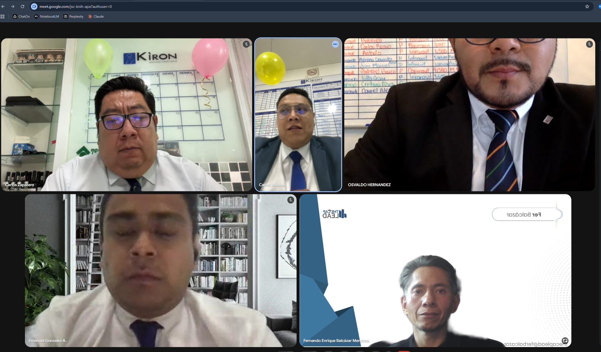

Cómo una franquicia del sector inmobiliario transformó su arquitectura operativa y pasó de apagar incendios a cerrar operaciones de alto valor.

Workshop en sesión: Reset Estratégico — Sincronización de Alto Rendimiento. Abril 2026.
El problema
El director de la franquicia lo sabía: tenía talento. El equipo llegaba motivado (8.5/10 en autoevaluación), con ambición real y años de experiencia. Pero los números no cerraban.
Los negocios se caían en la última milla. Los clientes cambiaban de opinión al momento de la firma. La comunicación entre asesores y dirección corría por canales informales — sin visibilidad, sin control. Y el seguimiento de prospectos dependía de la memoria de cada asesor, no de un sistema.
El problema no era el talento. Era la arquitectura operativa. O mejor dicho: la que no existía.
Diagnóstico
La intervención
No llegué con un manual. Llegué con preguntas. El diagnóstico lo construimos con el equipo — porque los que saben dónde están las fugas son los que trabajan dentro.
Workshop de reset estratégico. Ingeniería inversa del fracaso: identificamos qué saboteaba los resultados desde adentro.
Checklist de primera cita, protocolo de seguimiento con métricas, canal único de comunicación y nicho por asesor.
Plenaria de implementación: qué cambia, quién hace qué, cómo se mide. Compromisos, no intenciones.
Roadmap con quick wins inmediatos. El director salió con un plan de 90 días, no con un PDF para archivar.
Resultados
El cambio no fue inmediato. Fue estructural. Y eso es lo que dura.
Busco que seamos una estructura lista para escalar, donde la tecnología potencie el hambre comercial y dejemos de ser bomberos de incendios operativos.
Director de la franquicia · Sector inmobiliario · LATAM
En 90 días construimos juntos el sistema operativo que falta. Sin teoría, sin manual genérico.
Agenda una llamada